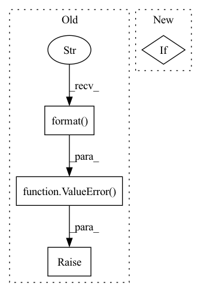

Pattern ID :1702

Before Change
elif output_nonlinear == "softmax":
end_net.append(nn.Softmax(dim=1))
else:
raise ValueError("Not support {}".format(output_nonlinear))
self.end_net = nn.Sequential(*end_net)
def forward(self, input, enc_h=None):
After Change
end_net.append(nn.Conv1d(hidden_channels, out_channels, kernel_size=1, stride=1, bias=False))
if output_nonlinear is not None:
if output_nonlinear == "softmax":
kwargs = {
"dim": 1
}
else:
In pattern: SUPERPATTERN
Frequency: 3
Non-data size: 4
Instances
Fragment ID: 3064820
Project Name: tky823/dnn-based_source_separation
Commit Name: 10282099ca12b94e9b9870841d4de0252506baab
Time: 2021-12-05
Author: delta9guitar97@gmail.com
File Name: src/models/wavenet.py
Class Name: WaveNet
Method Name: __init__
Parent Class: nn.Module
Fragment ID: 3064821
Project Name: tky823/dnn-based_source_separation
Commit Name: dde2365c3685653c33be298429c28543495869b2
Time: 2021-12-12
Author: delta9guitar97@gmail.com
File Name: src/models/tasnet.py
Class Name: Separator
Method Name: __init__
Parent Class: nn.Module
Fragment ID: 3064818
Project Name: tky823/dnn-based_source_separation
Commit Name: 08ed4eac522e740d5bb22e99fb4f60bd3f8aadf1
Time: 2021-03-12
Author: 40362510+tky823@users.noreply.github.com
File Name: src/models/d3net.py
Class Name: D3Block
Method Name: __init__
Parent Class: nn.Module